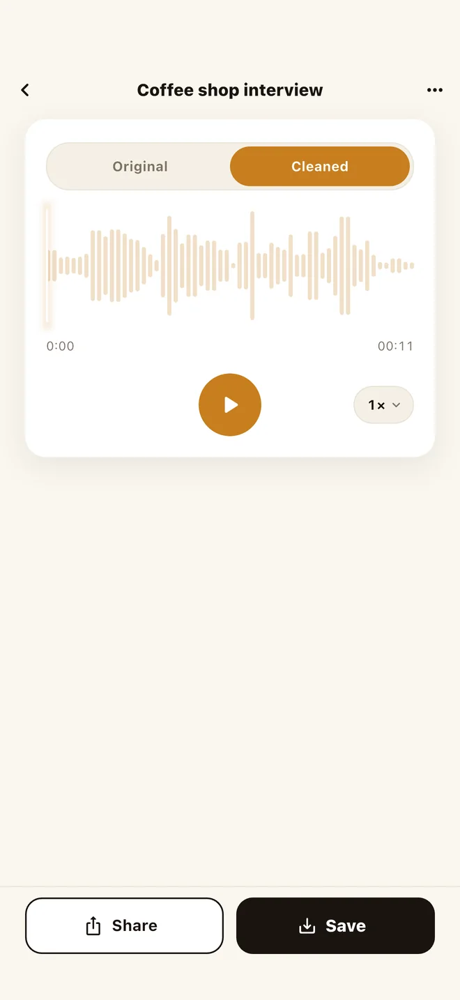
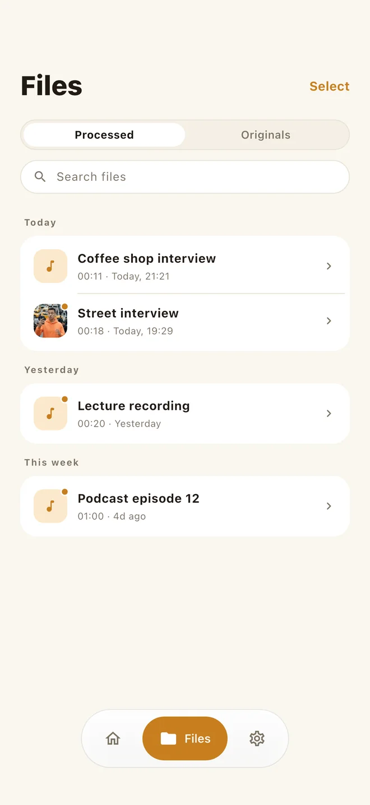
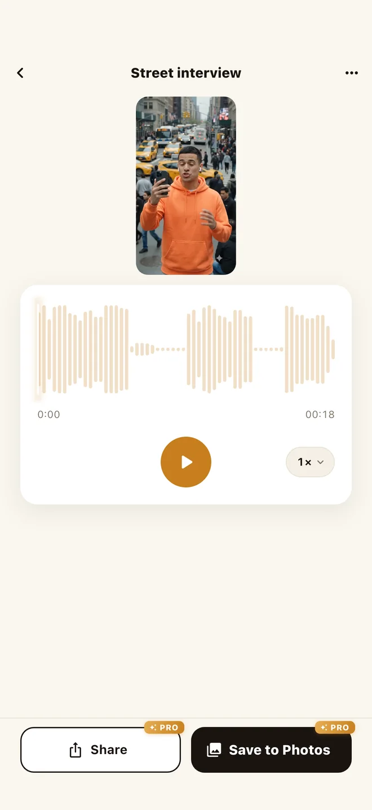
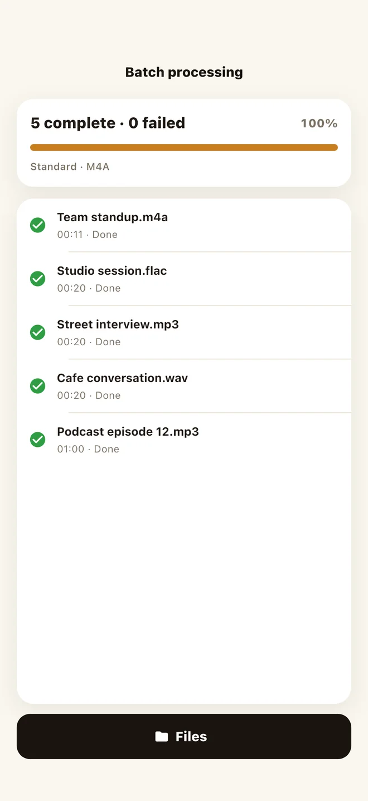
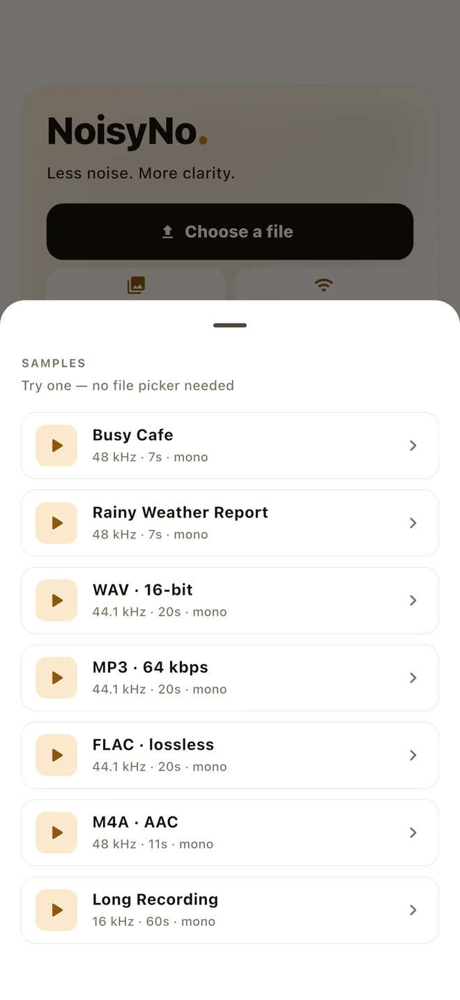

Clean voice memos, interviews, meetings, podcasts, and video audio fully offline. No uploads, no accounts.
Free to download · No subscription · Works offline · iOS, macOS & Android
Tap unmute to hear the difference.
Built on a purpose-trained speech-denoising network that runs entirely on your device — no cloud round-trips, no servers in the loop.
Drop in an MP4 or MOV and get the same clip back with only the sound cleaned. Without Pro you still keep the cleaned audio.
Every byte of audio stays on your device. Use it on confidential calls, interviews, or unreleased music.
WAV, MP3, M4A (AAC), FLAC, MP4, MOV — and OGG, Opus, 3GP on Android. Video files are accepted too. Clean audio exports as M4A, or lossless WAV with Pro.
No signal? No problem. The full denoiser is bundled in the app — works on a plane, in a basement, anywhere.
Queue as many recordings as you like, in any mix of formats, and clean them all in one go.
The denoiser is language-agnostic — it treats speech in any language the same, cleaning noise without touching the words.
No editing skills needed.
Choose any audio or video you already have — or start with a built-in sample, no file picker needed.
The on-device network strips background noise from the speech track. On a modern phone, processing is typically faster than realtime.
Toggle between the original and cleaned audio to hear the difference, adjust playback speed, then send the result through the system share sheet — Messages, Mail, Drive, anywhere.
Compare, keep, clean video, clean in bulk — the whole flow fits in a handful of screens, with nothing to set up before you start.





The whole noise-removal engine ships in the app, so it works on a plane and never asks for an account. Noise removal is free — a one-time Pro upgrade adds cleaned video export, batch processing, loudness normalization, and lossless WAV if you need them. Limited anonymous analytics and crash diagnostics are disclosed in the Privacy Policy.
No. Every step runs locally on your phone using an on-device neural network. Your files never leave your device. See our Privacy Policy for details.
Yes. The AI model is bundled with the app, so denoising works offline. You only need internet for the initial app download.
WAV, MP3, M4A (AAC), FLAC, plus MP4, MOV, and M4V for video — and additionally OGG, Opus, 3GP, and 3GPP on Android. Cleaned audio is saved as M4A (AAC); Pro adds lossless WAV (16-bit).
Yes. The detail screen has an Original / Cleaned toggle, so you can A/B the same moment in the clip — switch sources without losing your place — and confirm the cleanup before you save or share.
It depends on the length of the clip and your device, but everything runs on-device with no upload wait. You can keep the app in the foreground and watch the progress bar.
Yes. Drop in an MP4 or MOV and NoisyNo cleans its sound on the device. With Pro you get the same clip back as a video with only the audio replaced, ready to save to Photos or share. Without Pro you keep the cleaned audio as its own file.
The denoiser is language-agnostic — it works on speech in any language.
No. NoisyNo is free to download and there is no subscription. Noise removal is free to use. Pro is a one-time in-app purchase that adds cleaned video export, batch processing, loudness normalization, lossless WAV export, and trimming before cleanup. The Mac version is a separate purchase.
Yes. NoisyNo is on the Mac App Store with a desktop layout, drag-and-drop, and Wi-Fi transfer so a recording can come straight off your phone. Processing runs on the Mac, offline.
It brings the cleaned audio to a consistent perceived volume instead of leaving it wherever the recording landed. Pick a target — audiobook (−18 LUFS), podcast (−16 LUFS), video and streaming (−14 LUFS), or a custom value — and NoisyNo analyzes the file and normalizes it on-device after denoising. Useful when you're submitting to a platform with loudness requirements, or stitching clips recorded at different levels.
Send a bug report, privacy question, feature request, or file-format issue. Include your device model, app version, and what you were trying to clean if it helps explain the problem.
Best for bug reports, feature ideas, store questions, and anything that needs a direct reply.
Privacy and files Read the policySee how NoisyNo handles audio, video, diagnostics, analytics, and third-party services.
Quick answers Jump to FAQCheck offline use, supported formats, video input, languages, and subscription status.